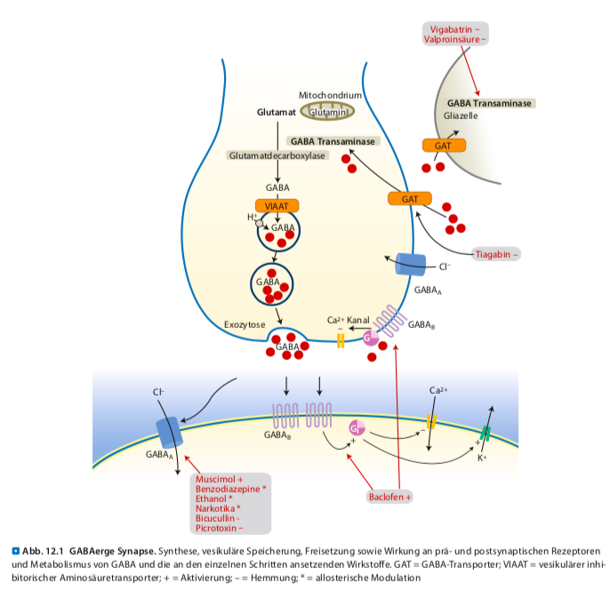

3. Systeme des ZNS
3. Systeme im ZNS - Einleitung
Die Studierenden erhalten in diesem Kapitel alle essenziellen Information über die physiologischen Grundlagen der Systeme, damit sie im Anschluss die Wirkung der Pharmaka, welche die Neuronen-und/oder Transmittersysteme beeinflussen, verstehen als auch in der Praxis anwenden können. Das dopaminerge, das glutamaterge, das GABAerge System und das glycerinerge System werden im folgendem erläutert.
3.1. Dopaminerges System – Positives Belohnungssystem
Lernziele:
- Belohnungszentrum
- Suchtentwicklung
- Dopaminerge Neuronen und ihre Synthese
[1] Im limbischen System und im Hirnstamm lässt sich ein System definieren, das als Belohnungssystem oder mesolimbisches (= mesencephal-limbisches) Dopaminsystem bezeichnet wird. Das System ist beteiligt für das Zustandekommen der Emotion Freude und mitwirkend für die Suchtentwicklung. Nervenzellen weisen den wesentlichen, strukturellen Bestandteil dieses Systems auf, die von der Area tegmentalis ventralis im Mittelhirn lange Axone zum Vorderhirn ausbilden und den Nucleus accumbens aktivieren. Dopamin dient für die Neuronen als Transmitter.
Legen Wir den Fokus wieder auf die Suchtentwicklung: Diese ist eine extreme Form von Motivation, welche zu psychischen und/oder physischen Abhängigkeit und Toleranzentwicklung führt. Suchstoffe bewirken, dass der Nucleus accumbens mit Dopamin „überschwemmt“ wird.
Nicotin stimuliert Neurone der Area tegmentalis ventralis, so dass mehr Dopamin ausgeschüttet wird
Alkohol und Opioide verstärken Dopaminausschüttungen, in dem sie Nervenzellen hemmen, die ihrerseits die dopaminergen Neurone in der Area tegmentalis ventralis blockiert. Des Weiteren stimulieren Opioide direkt über Opioidrezeptoren die Neurone des Nucleus accumbens
Das Belohnungszentrum versucht einer solchen „Dopaminüberschwemmung“ entgegenzuwirken, in dem es Dynorphin bildet.
[2] In den dopaminergen Neuronen beginnt die Dopaminsynthese durch Hydroxylierung von Tyrosin. Das gebildete Dopamin wird über VMAT-2 in Speichervesikel aufgenommen und durch Exocytose freigesetzt (siehe Abbildung 1.).
Abbildung 1
[4] Merke:
Im limbischen System und im Hirnstamm befindet sich das Positive Belohnungszentrum (mesolimbische Dopaminsystem),
das am Zustandekommen der Emotion Freude (Glück) beteiligt ist und eine positive Verstärkung eines Verhaltens bewirkt.
Es trägt auch zur Suchtentwicklung bei, weil Suchtstoffe den Nucleus accumbens mit Dopamin überschwemmt.
3.2.Glutamaterges System
Lernziele:
- Verteilung und Funktion
- Präsynaptische Mechanismen
- Postsynaptische Mechanismen
3.2.1. Verteilung und Funktion
[3] Glutaminsäure (Glutamat) gehört neben Aspartat zu den wichtigsten exzitatorischen Neurotranssmittern im zentralen Nervensystem.
Glutamat übt seine Funktionen, nicht wie GABA und Glycin, im gesamten zentralen Nervensystemaus aus. Glutamaterge Nervenzellen finden sich sowohl in lokalen Schaltkreisen als auch in Projektionsbahnen weit über das Gehirn verteilt.
Glutamat wird zur Wahrnehmung von Sinneseindrücken, zur Kontrolle der Motorik sowie für Lern-und Gedächtnisleistung benötigt.
3.2.2. Präsynaptische Mechanismen
Glutamat kann auf mehreren Wegen synthetisiert werden: → durch Transaminierung aus 2-Oxoglutarat (= α-Ketoglutarat), ein Intermediärprodukt des Zitratzyklus, und
→ Glutamat wird aus Glutamin mittels Glutaminase synthetisiert.
Legen Wir nun den Fokus auf den zweiten Punkt:
- Glutamat entsteht einerseits aus Glutamin (welches aus Gliazellen stammt) mittels Glutaminsynthetase, dieses wird aus dem Extrazellularraum aufgenommen
Abbildung 2 und Abbildung 3 erläutert den Kreislauf zwischen Glutamin und Glutaminsäure, der sowohl Neurone als auch Glia einbeziehen:
- Glutamat wird in Gliazellen aufgenommen
- Aufnahme erfolgt durch Exzitatorische Aminosäuretransporter
- Einige ZNS-Erkanrungen werden mit diesen Transportern in Zusammenhang gebracht z.B. amyotrophe Lateralsklerose
- Glutamat wird über vesikuläre Glutamattransporter in synaptische Vesikel gespeichert
- Durch Ca2+-abhängige Exozytose wird das vesikuläre gespeicherte Glutamat freigesetzt, um an geeigneten Rezeptoren zu binden.
Abbildung 2
3.2.3. Postsynaptische Membran
Nach der Freisetzung werden sowohl inotrope als auch metabotrope Rezeptoren belegt (siehe Abbildung 4.).
Inotropen Rezeptoren
Die inotropen Glutamatrezeptoren verfügen vier Untereinheiten und jede Untereinheit besitzt drei Transmembrandomänen sowie in die Membran eintauchende Schleife. Vorhanden sind 18 Rezeptoruntereinheiten, die folgende Rezeptortyoen bilden können (siehe Tabelle):
* N-Methyl-D-Aspartat- oder NMDA-Rezeptoren
* Alpha-Amino-3-hydroxy-5-methyl- 4-isoxazolpropioinsäure-
Ü oder AMPA-Rezeptoren
* Kainsäure- oder Kainatrezeptoren
Die ersten beiden zählen zu den NMDA-Rezeptoren, die als Koinzidenzdetektor funktionieren. Die Aktivierung erfolgt nicht nur aus extrazellulärem Glutamat, sondern auch Glycin. So können die Rezeptoren auch als Glycinrezeptor aufgefasst werden, niemals aber mit dem eigentlichen inhibitorischen Glycinrezeptor verwechselt werden. Die Koinzidenzdetektion verhilft dem NMDA-Rezeptor, da der dadurch an Lernprozessen, Wahrnehmung, Bewusstsein und Schmerzempfindung beteiligt ist.
Metabotrope Glutamatrezeptoren (mGluR)
Weisen eine Struktur mit 7 Transmembrandomänen auf und leiten ihre Signale über heterotrimere G-Proteine weiter
Abbildung 3
Abbildung 4
[4] Klinischer Bezug: Glutamat und das Chinarestaurant-Syndrom Glutamat wird von bestimmten Geschmacksrezeptoren auf der Zunge wahrgenommen und ruft den Geschmack „umami“, übersetzt „schmackhaft“ hervor. Die Beschwerden eines China-Restaurant-Syndrom sollen etwa eine bis 14 Stunden nach dem Essen auftreten. Betroffene berichten von Kopfschmerzen, Gliederschmerzen, Rückenschmerzen, Nackenschmerzen, Schwindel, Herzrasen und Brustenge. Dabei handelt es sich vermutlich um eine reversible Glutamatintoxikation, wodurch die Symptome nach dem Verzehr von Speisen mit hohen Glutamatgehalt auftreten. Ein eindeutiger Beweis wurde bisher nicht erbracht.
3.3. GABAerge und glycerinerge System
Lernziele:
- Verteilung und Funktion
- Präsynaptisch
- Postsynaptisch
3.3.1. Verteilung und Funktion
[3] Weitere wichtige inhibitorische Neurotransmitter im ZNS sind
gamma-Aminobuttersäure (GABA ist im Gehirn vorzufinden) und
Glycin, das vorwiegend im Rückenmark verbreitet ist.
Glycin kontrolliert im Rückenmark die exzitatorischen Verschaltungen um dadurch den geregelten Ablauf der Motorik zu ermöglichen
GABAerge Interneurone sind an nahezu allen Leistungen des Gehirns beteiligt. Grund dafür ist die große Dichte der Interneuronen im gesamten Cortex, im Hippocampus, Amygdala, Kleinhirn und im Thalamus vorkommen.
→ Substanzen, die in dem System angreifen bewirken Sedation, Narkose, antiepileptische Effekte oder Gedächtnisveränderungen
 Abbildung 5
3.3.2. Präsynaptische Membran
GABA wird durch Decarboxylierung aus Glutamat mittels Glutamatdecarboxylase gebildet (siehe Abbildung 5.).
Die benötigten Enzyme werden ausschließlich in GABAergen Neuronen exprimiert und entscheiden, ob Nervenzellen erregend (glutamaterg) oder hemmend (GABAerg) sind.
Glycin und GABA werden beide vom Zytosol durch den vesikulären GABA-Transporter im Austausch gegen Protonen in Vesikel befördert (vesikulärer inhibitorischer Aminosäuretransporter (VIAAT))
- GABA-Transporter können beispielsweise durch das Antiepileptikum Tiagabin blockiert werden
Vesikel, gefüllt mit Glycin und GABA, werden durch Ca2+-abhängige Exocytose freigesetzt und entfallen dann an den entsprechenden Rezeptoren ihre Wirkung (siehe Tabelle)
Abbildung 6
Durch metabotropen GABAB-Rezeptoren (G-Protein-gekoppelten-Rezeptoren) gelangen beide Aminosäurentransmitter in die Präsynapse.
GABA aktiviert nicht nur GABAB-, sondern auch GABAA-Rezeptoren. Werden präsynaptische GABAB-Rezeptoren beispielsweise durch Baclofen aktiviert, nimmt die synaptische GABA-Konzentration ab, sodass GABA an den postsynaptischen GABAA-Rezeptoren fehlen und nur die GABAB-Rezeptoren durch Baclofen aktiviert werden. Das Resultat ist Abnahme von inhibitorischer Neurotransmission, was für GABA-Rezeptor-Agonisten eine unerwartete Erregungssteigerung auslöst, die zu Krampfanfällen führen.
Inotrope G
GABAA-Rezeptoren können durch ihre Aktivierung sowohl zur Hemmung als auch zur Steigerung der Transmitterfreisetzung führen.
GABA und Glycin werden nach der Exozytose bevorzugt in Nervenendigungen oder in Gliazellen wieder aufgenommen, Dann folgt der Abbau von GABA mittels GABA-Transaminase, die GABA zu Succinatsemialdehyd umwandelt. Dieses Enzym wird durch die Antiepileptika Vigabatrin und Valproinsäure gehemmt, sodass der GABAerge Tonus zunimmt.
3.3.3. Postsynaptische Mechanismen
Nach dem Glycin und GABA von der Präsynapse freigesetzt wurden, greifen diese nun postsynaptische Rezeptoren an.
Für Glycin sind hauptsächlich ionotrope Glycinrezeptoren bekannt, für GABA gibt es ionotrope GABAA- und metabotrope GABAB-Rezeptoren. Die ionotropen Glycin- und GABAA- Rezeptoren sind analog zum Acetylcholinrezeptor aufgebaut.
3.3.4. Antagonisten
- Innerhalb der Poren werden Glycin – und GABAA- Rezeptoren durch das Krampfgift Picrotoxin blockiert, die einen nichtkompetitiven Antagonismus gegenüber den Transmittern entspricht.
- Strychnin wirkt als selektiver, kompetitiver Antagonist sann Glycinrezeptoren
- Bicucullin ebenfalls an GABAA-Rezeptoren.
Die genannten Antagonisten sind Krampfgifte, wobei Strychnin tetanische Krämpfe auslöst, Bicucullin eher epileptiforme.
3.3.4.1. Strychnin
Kompetitiver Antagonist, das an die Glycinbingunsstelle der Glycinrezeptoren kompetitiv bindet. Durch diese Blockade verursacht Strychnin einen Rückenmarkkrampf
[2] MERKE:
Viele Pharmaka und Toxine interagieren mit den verschiedenen Untereinheiten des GABAA-Rezeptors,
diese Eigenschaft ist in der klinischen Forschung von großer Bedeutung.
Literatur:
Literaturverweise
[1] Thews, G., Mutschler, E., & Vaupel, P. (1999). Anatomie, Physiologie, Pathophysiologie des Menschen (Vol. 4). Stuttgart: Wissenschaftliche Verlagsgesellschaft.
[2] Graefe, K. H., Lutz, W., & Bönisch, H. (2016). Duale Reihe Pharmakologie und Toxikologie. Georg Thieme Verlag.
[3] Freissmuth, M., Offermanns, S., & Böhm, S. (2012). Pharmakologie und Toxikologie. Von den molekularen Grundlagen zur Pharmakotherapie.
[4] Graefe, K. H., Lutz, W., & Bönisch, H. (2011). Pharmakologie und Toxikologie. Thieme
Abbildungsverzeichnis
Graefe, K. H., Lutz, W., & Bönisch, H. (2016). Duale Reihe Pharmakologie und Toxikologie. Georg Thieme Verlag. Seite 269-274